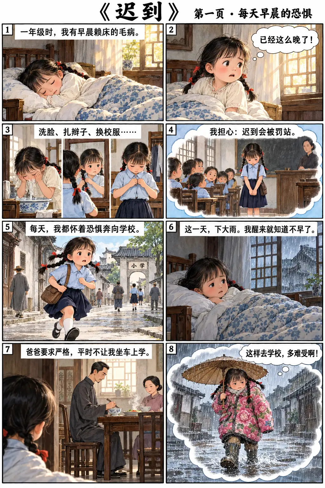

中一高级华文 · 单元二 · 核心课文 · 2课时
迟到
爸爸为什么一早严厉责备“我”，又冒雨赶到学校？
观察漫画 → 读懂课文 → 找直接信息（Direct Info）→ 作必要推断（Inference）→ 订正答案。

Today’s targets（学习目标）
① 说清故事的起因、经过、转折与结果；② 直接信息有依据，人物心理推断有根据；③ 比较父亲的语言与行动，理解“严厉”和“关心”；④ 用原文事例支持看法。
漫画是帮助阅读的图像改编；若漫画台词与课文略有不同，以课文原句为准。部分场景涉及打孩子，课堂应引导学生理性辨析，不将体罚等同于关爱。
Learning record（记录说明）
课堂练习共14项，按两课时进行；红字词语可点选查看英文。作答保存在当前设备浏览器，答错先看提示再订正。开放题采用自检，不能自动判分。
课堂成绩目前不会自动上传教师后台，如需收集，请学生在 Record（记录）导出 CSV。
Offline（学生离线版）
完整保留19段课文、40格漫画、词语解释及两课时14项练习。图片、样式与程序全部内嵌，无需另下载 shared 文件夹。
iPad“文件”App 的快速预览可能无法运行练习；请使用能执行 JavaScript 的浏览器／HTML 阅读器。先试点选下一段，再断网检查。学习记录在 Record 导出 CSV 或 JSON；支持导入 JSON 备份。在线版与本地文件的记录不会自动互通。